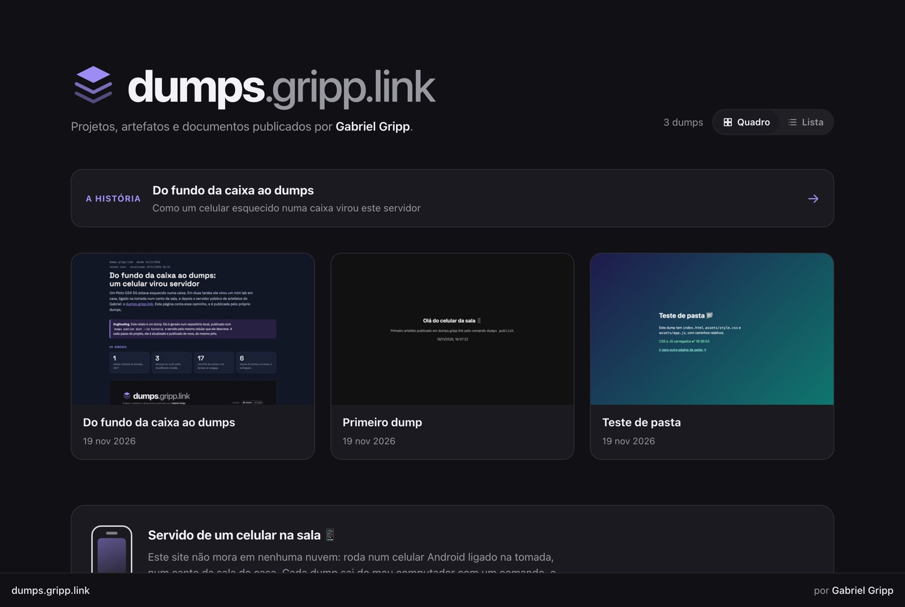

One command, or your AI agent, turns a report, a story, a deck or a dashboard into a link on your own domain. It runs on an old phone, a Raspberry Pi, a VPS or just your laptop.
Built end to end with flux
# publish a page $ dumps publish ./report.html --title "Q3 review" https://dumps.example.com/k3v7q2xz9a/ # or let your agent do it > /dump-this slides from notes.md about the launch https://dumps.example.com/launch-deck/
dumps.gripp.link is served by an Android phone plugged into the wall, through a Cloudflare Tunnel. Its first featured dump is the story of how it was built, published by dumps itself.

Static files, one binary, your domain. No database, no build step, no account anywhere.
Publish a file or a folder, republish to update in place, hide it from the home with --hidden.
Atomic activation with rollback, a single writer under a lock, blocked paths for things you must never publish.
Open Graph and Twitter cards are injected into every page, with the thumbnail as the image.
Android with Termux, Linux with systemd, macOS with launchd, or fully local with no network at all.
The admin verifies Cloudflare Access JWTs or Tailscale identity. Dumps and admin live on separate origins.
Turn on GA4 with one ID: page views, shares per channel and clean mode, without republishing anything.
The dump-this skill picks the specialist your page needs and follows their recipe. You do not need a dumps server: it improves the artifacts you already make in Claude and ChatGPT, and publishes to your domain when dumps is installed.
Set the style in plain words, from conservative to master innovation. It never falls back to the default artifact look: no centered gradient hero, no three identical cards, no emoji icons.
curl -fsSL https://grippado.github.io/dumps/dump-this.zip -o /tmp/dump-this.zip unzip -oq /tmp/dump-this.zip -d ~/.claude/skills
Run it in any terminal, no clone needed. Then type /dump-this in a new session and say what you want.
curl -fsSL https://grippado.github.io/dumps/dump-this.zip -o /tmp/dump-this.zip unzip -oq /tmp/dump-this.zip -d ~/.codex/skills
Same zip, Codex's skills folder. Then ask for a dump in plain words in a new session.
Upload it in Settings, Capabilities, Skills. You get the page as an artifact to share.
Dumps made by the agent are published hidden. The link works right away, and the admin shows a Publicar button so you review before it reaches your home page.
To publish from the agent, clone the repo and run the installer from its folder: git clone https://github.com/grippado/dumps && cd dumps && cli/dumps install-agent all
/dump-this a dashboard of this week's deploys from deploys.csvdumps unarchive deploys-w47.Pick the box you have and the way you want to reach it. Every recipe is a doc in the repo.
The original setup: runit services, Caddy, a Cloudflare Tunnel and Access in front of the admin.
Read the recipe →A user systemd service, Caddy, and the tunnel of your choice. Works the same on a VPS.
Read the recipe →Public host for dumps, private host for the admin, Access JWT verified by dumpsd.
Read the recipe →Funnel for the public dumps, tailscale serve for the admin with Tailscale identity.
Read the recipe →Keep it on the Mac mini in the closet: launchd service, Caddy from Homebrew.
Read the recipe →Publish and browse on localhost, no ssh, no tunnel. Great for trying it out.
Read the recipe →You need Go and bash. Everything stays on your machine.
git clone https://github.com/grippado/dumps && cd dumps
cli/dumps install-dumpsd
cli/dumps publish ./page.html
cli/dumps serve-localOpen http://localhost:8090 for the dumps and http://localhost:8091/_dumps/ for the admin.
dumps is MIT licensed. The output of every renderer is pinned by golden files, CI runs gofmt, vet, shellcheck and the race detector, and the docs exist in English and Portuguese.
dumps was built end to end with flux: every slice was refined, built, reviewed and iterated with it. These tools live side by side.